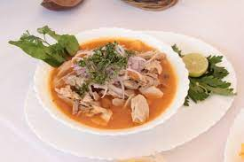

Encebollado

Description
Encebollado is a fish broth that contains albacore, cassava, tomato, red onion, cilantro,
chili powder, cumin and other spices. It is accompanied with chifles, which are added at
the time of tasting it. It is common for it to be seasoned with drops of green lemon and
chili.
Ingredients
- 2 pounds of fresh tuna
- 1 pound of fresh or frozen cassava
- 2 tabblespoons of oil
- 2 chopped tomatoes
- Half chopped onion
- 1 teaspoon of non-spicy chili powder
- 2 tablespoons ground cummin
- 8 cups of water
- 5 sprigs of cilantro
- Salt
Instructions
- Prepare a refried sauce with the onion, tomato, cumin,
chili pepper and salt.
- Add the water and the cilantro sprigs.
- Add the tuna when the water starts to boil, cook until the tuna is done,
about 15 minutes.
- Sieve the broth where the water was cooked and save it to cook the cassava
- Half chopped onion
- Bring the tuna broth to a boil and add the yucas, cook until soft
- Take out the yucas and cut them into small pieces.
- Put the chopped yucas and the tuna slices back into the broth, adjust the salt and heat
until ready to serve.
- To serve the fish encebollado, pun a good portion od the onion and tomato encurtido on top
each other.